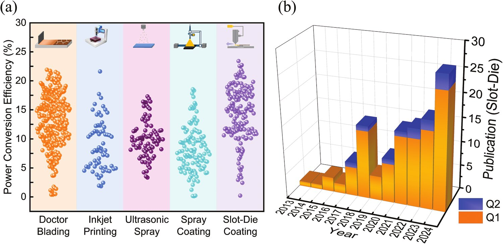
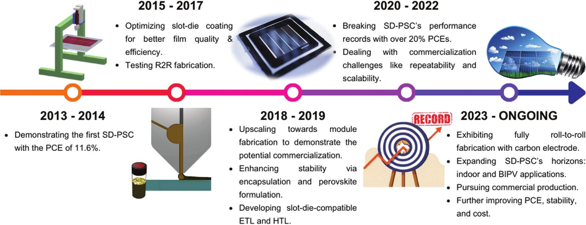
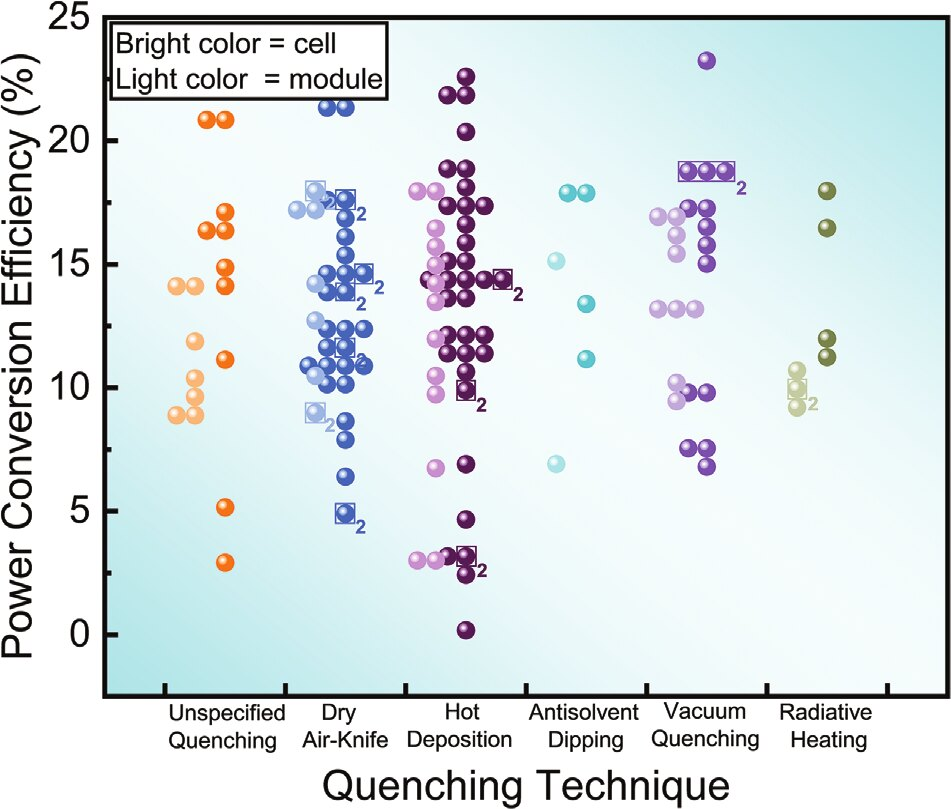
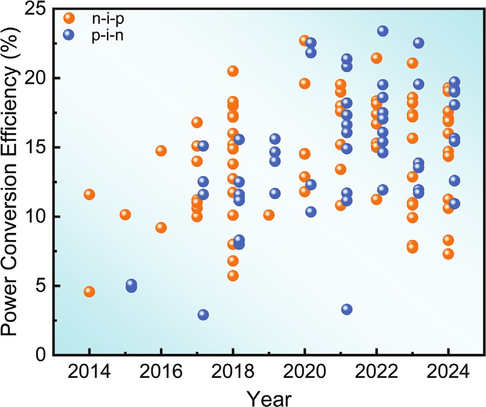
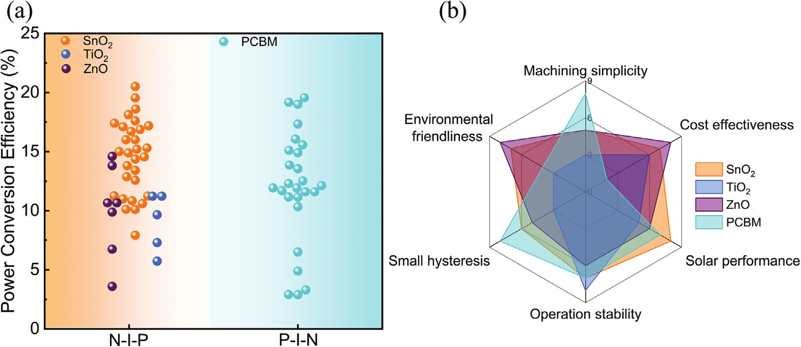
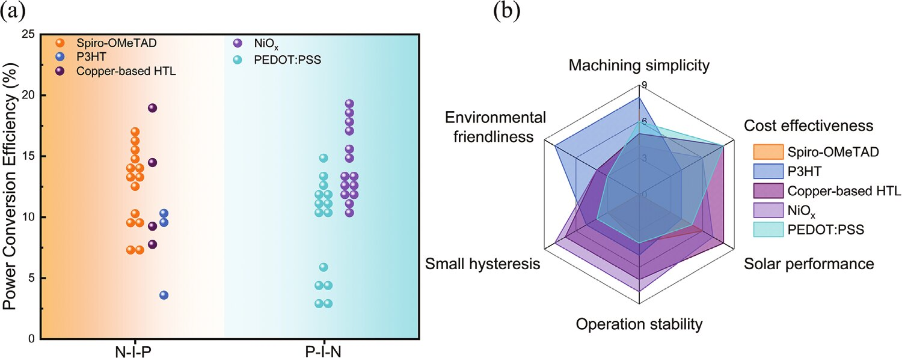
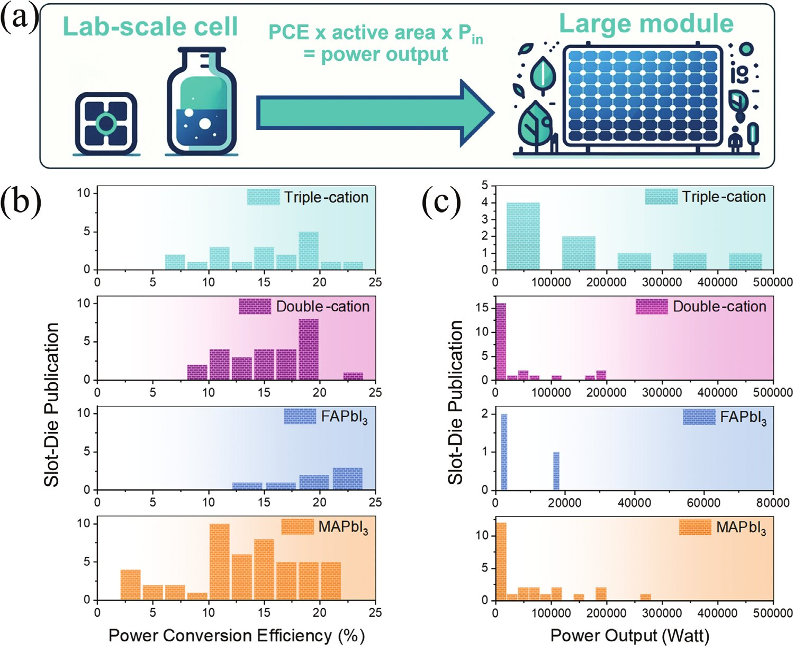
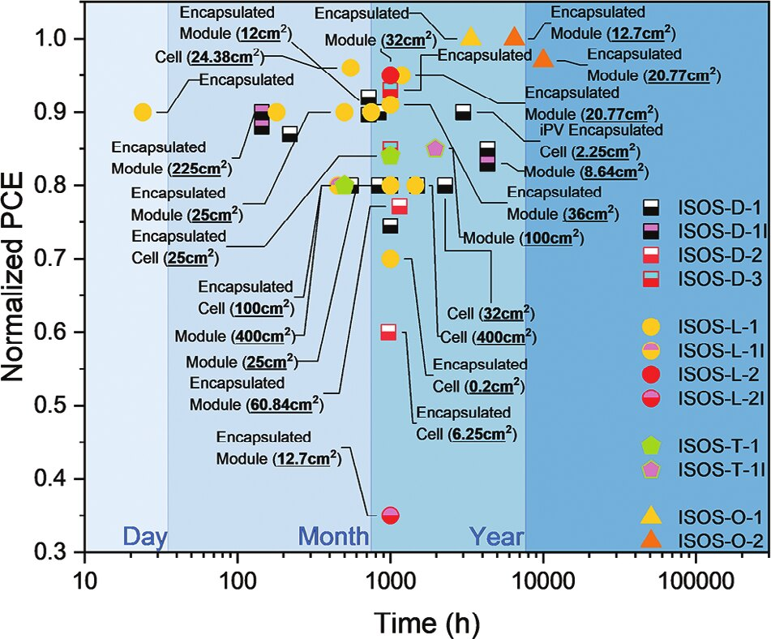
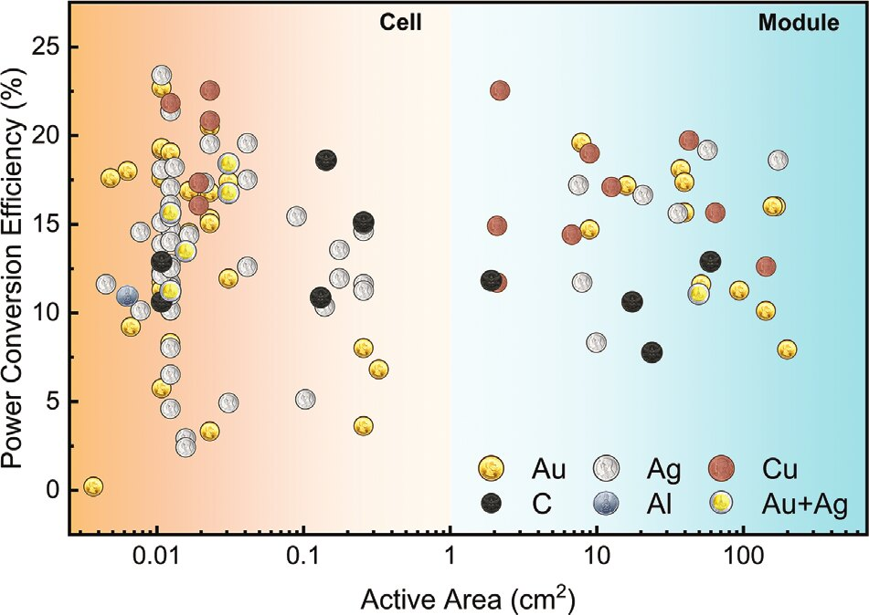
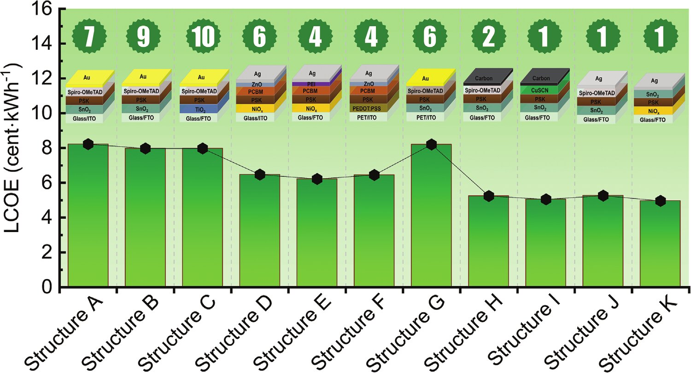

Comprehensive Review on Slot-Die-Based Perovskite Photovoltaics
Mechanisms, Materials, Methods, and Marketability
Abstract
As the world edges closer to perovskite solar cell (PSC) commercialization, state-of-the-art materials and processes become publicized to a much lesser degree. From current insights into perovskite industry standards, slot-die coating is the number one method for fabricating the perovskite layer. Other significant layers can be done using varying techniques. Hence, in this review article, all 115 existing slot-die-based PSC publications to date together with related literature are crystallized to set stages for future scalable perovskite research. Through investigation of the effects of materials, processes, and structures on performance, stability, and cost of slot-die coating is presented. In the end, power output x operating lifetime per cost is the most influential factor for market consideration. The roll-to-roll compatibility of the slot-die coating together with low-cost materials and lean processes present a cost-effective strategy for successful commercialization.
Introduction
Why slot-die coating
Since the ultimate goal of perovskite photovoltaic technology is not limited to only laboratory achievements, the feasibility of solution-based large-scale coating techniques such as slot-die coating, doctor blade coating, inkjet printing, conventional spray coating, and ultrasonic spray coating is identified. Compared to other coating techniques, slot-die and doctor blade methods show the most promising PCE trend and highest PCEs (the record of 23.4% for slot-die coating).

The origins of slot-die coating can be traced back to the early 1950s when the Eastman Kodak Company filed a patent for its application in photographic film production. Due to slot-die coating's high materials utilization efficiency, ≈99% of the coating materials can be transformed into a thin film. This efficiency not only reduces costs but also mitigates environmental impact, making it a more sustainable option for large-scale production, both economically and environmentally.
The first translation of scalable slot-die coating in perovskite technology was initiated in 2014 by modifying the 3D printer, yielding an efficiency of 4.57% with an active area of 47.3 cm². In 2020, record-breaking PCEs exceeding 20% were achieved via slot-die coating of perovskite layers. From 2023, fully R2R-fabricated solar cells up to 50 cm² equipped with carbon electrodes were produced to address commercialization challenges like repeatability, scalability, and cost.

Mechanisms
From meniscus to crystal
The method is similar to the blade coating such that both use a moving precursor ink meniscus to deposit ink across substrates. The only difference between the two is the presence of an ink reservoir inside the die-head of the slot-die coating method which allows slot-die coating to have a better ink flow control compared to that of blade coating.
The crystallization mechanism of slot-die is very different from that of spin coating technique. In spin coating, centrifugal force mainly drives the evaporation of solvent inside the solution. However, in slot-die, there is no such kind of driving mechanism to force the solvent out. So, the crystallization process takes longer and resulting surface morphology may become rough and inhomogeneous which, ultimately, affects the PV performance.
Slot-die coating without an additional quenching process is similar to spin coating at low rpm which results in a lot of uncovered areas with needle-like grain structure. For fabricating uniform perovskite films, extra quenching procedures are required. Several techniques such as air-blown quenching, vacuum quenching, near-infrared (NIR) quenching, substrate heating, and antisolvent quenching have been investigated.

Materials
Charge transport layers
Due to its popularity, the n–i–p configuration has been employed since the very first translation of slot-die coating. Afterward, the first p–i–n device with ≈5% PCE was reported in 2015. The first perovskite solar device exceeding 20% PCE by slot-die coating of solely the ETL was reported in 2018 with the n–i–p configuration. Later, the p–i–n device achieved comparable performance in 2021 over 20% PCE by slot-die coating of HTL and perovskite layers. With this substantial improvement over the years, both n–i–p and p–i–n perovskite solar devices are approaching readiness for commercialization.



Perovskite composition
The most widely-used perovskite recipe is MAPbI3, owing to it being the primitive perovskite material since the invention of PSCs. Despite this popularity, the PCEs of slot-die-based MAPbI3 devices have been surpassed by three other types of perovskites: FAPbI3, double-cation, and triple-cation. Higher PCE values recorded are yielded from recipes that involve multiple cations as a more complex system. The best result by power output belongs to the triple-cation recipe, which reaches a PCE of 18.6% for a 243.36 cm² active area with a T90 at 1300 h under maximum power point (MPP) 1-sun illumination.

Methods
Stability
As the ultimate goal of slot-die coating for perovskite solar devices is large-scale production and commercialization in the photovoltaic market, stability is of the greatest priority. Currently, the international standards for testing photovoltaic modules are the International Electrotechnical Commission (IEC) and International Summit on Organic Photovoltaic Stability (ISOS) protocols, both of which include accelerated and modifiable testing conditions allowing for informative failure analysis over estimated operational lifetimes. For laboratory device stability testing, ISOS protocols are favored for their more informative and conclusive degradation analysis.

Marketability
Cost
One of the most notable strengths of slot-die coating is its incredibly high materials utilization efficiency exceeding 99%, meaning nearly all the perovskite materials can be converted to thin film with a very small lost proportion only at the beginning and the end of the coating line. However, despite this impressive efficiency, scalable fabrication demands a comprehensive cost analysis. The fabrication of PSCs, especially at the commercial scale, requires the consideration of three primary cost factors: cost of materials, cost of energy consumption, and cost of equipment.
The back electrode is another one of the costliest materials in PSC fabrication. Even though metal electrodes show remarkable performances at over 20% with satisfactory consistencies, their known stability issue of ion diffusion and limited deposition processes along with their notable high cost make the metal electrodes become a major hurdle preventing the transition from lab-scale fabrication to large-scale commercialization. Replacement with carbon-based electrode is one of the most efficient ways to address these issues and reduce the cost of PSC fabrication possibly all the way down to half the price.

The levelized cost of electricity (LCOE) is a value calculated from a techno-economic analysis aimed at evaluating the cost potential of electricity-producing technologies. One of the most widely used models to calculate LCOE is provided by the National Renewable Energy Laboratory (NREL):
where \(c_n\) is the cost in year \(n\) in USD kW⁻¹, \(d\) is the discount rate, \(e_n\) is the energy produced in year \(n\) in kWh kW⁻¹, and \(n_s\) is the number of years in the system's service life.

Configuration stacks with gold, silver, and carbon as the back electrode materials show, in descending order, the greatest, lower, and lowest LCOE values, respectively. Choosing CuSCN over Spiro-OMeTAD as HTL results in small cost reduction despite Spiro-OMeTAD, on its own, costing a lot more, as diethyl-sulfide for CuSCN is significantly more expensive than chlorobenzene in our price listing; the finding illustrates the importance of solvent when performing cost calculation.
Conclusion
The combination of performance and stability per unit cost is the ultimate factor in the commercial viability of PSCs. Slot-die coating presents itself as a cost-effective coating process by enabling R2R-compatible large-scale production with economical material utilization and low waste. As research continues to address the stability and environmental concerns of perovskite materials, the combination of high efficiency and low production costs along with proper materials set slot-die coated PSCs as a promising candidate for next-generation sustainable energy solutions.
My contributions
From the paper's author contribution statement, for T.J.:
C.S., N.T., and T.J. assisted with data collection. K.S., C.S., P.S., P.K., and T.J. made graphics. C.S., T.J., and N.T. assisted with the writing. P.K., K.S., C.S., T.J., and N.T. edited and revised the manuscript. P.K., T.J., and N.T. proofread the manuscript.
BibTeX
@article{shinthant2025slotdie,
title = {Comprehensive Review on Slot-Die-Based Perovskite Photovoltaics: Mechanisms, Materials, Methods, and Marketability},
author = {Shin Thant, Ko Ko and Seriwattanachai, Chaowaphat and Jittham, Thantham and Thamangraksat, Naruedej and Sakata, Patawee and Kanjanaboos, Pongsakorn},
journal = {Advanced Energy Materials},
volume = {15},
number = {5},
pages = {2403088},
year = {2025},
doi = {10.1002/aenm.202403088}
}